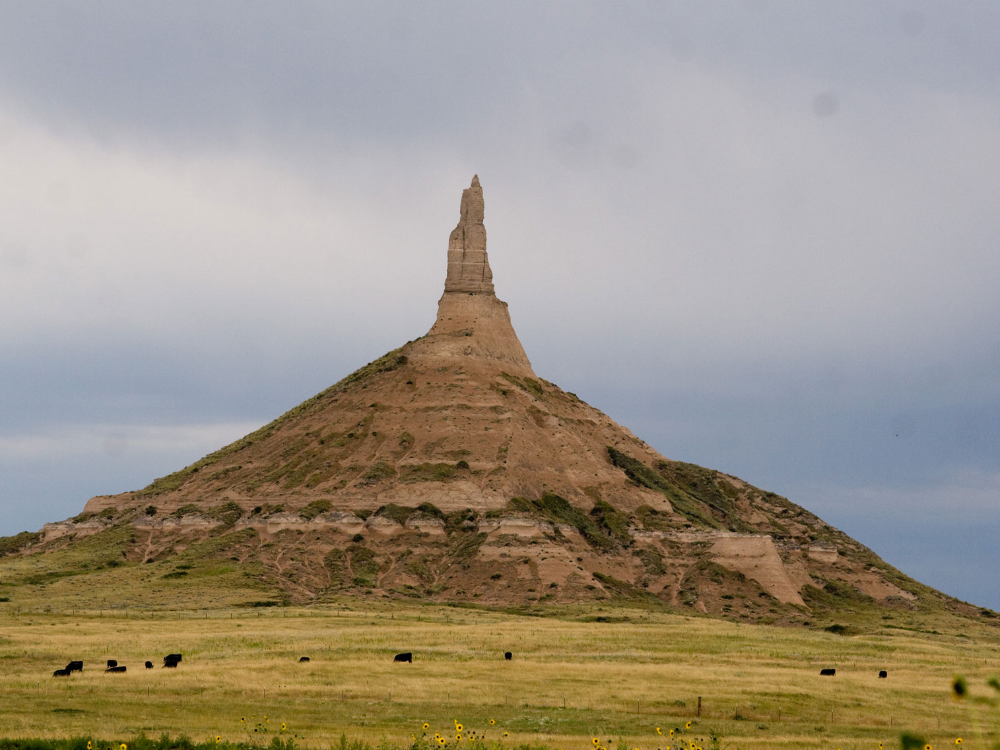
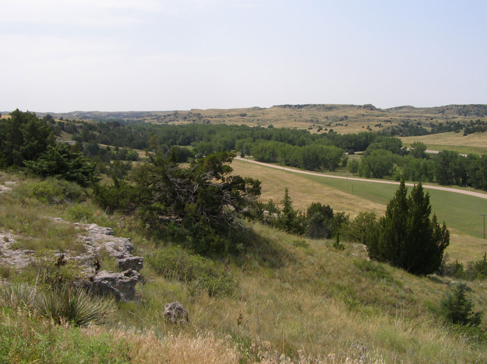
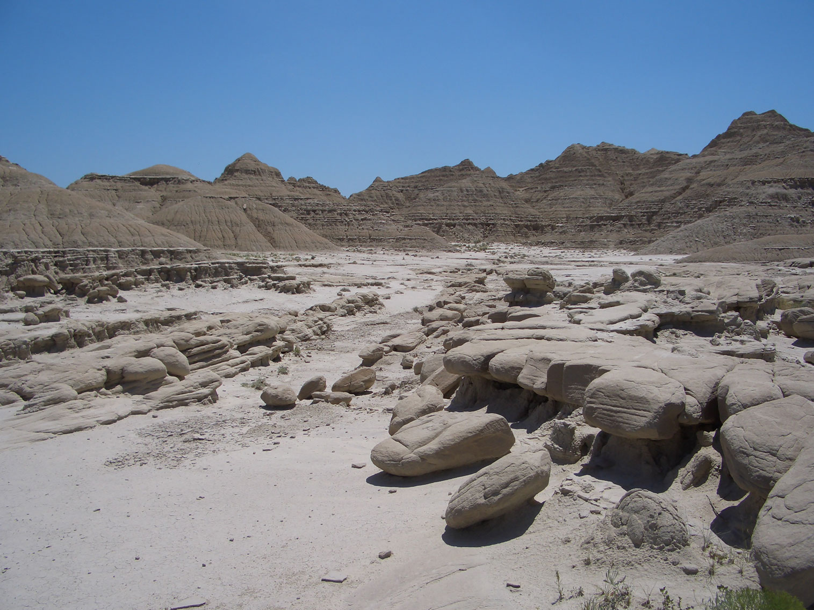

Nebraska Travel Guide
Explore Omaha's zoo and riverfront, then roam Nebraska's rolling Sandhills and treeless Great Plains prairie along the historic Oregon Trail.
Places to See in Nebraska
-1515.jpg)
Chimney Rock National Historic Site
Mike Tigas from Columbia, MO, United States, CC BY 2.0, via Wikimedia Commons; Image Size Adjusted

Chimney Rock National Historic Site
Mike Tigas from Columbia, MO, United States, CC BY 2.0, via Wikimedia Commons; Image Size Adjusted

Ash Hollow State Historic Park
Chris Light, CC BY-SA 4.0, via Wikimedia Commons; Image Size Adjusted

Toadstool Geologic Park
Brian Kell (Bkell), Public domain, via Wikimedia Commons; Image Size Adjusted
Overview
Nebraska is a Great Plains state of about 1.96 million people, known for wide skies, pioneer trails, and a friendly, small-town character. The capital is Lincoln and the largest city is Omaha. The name comes from Otoe words meaning "flat water," a reference to the Platte River.
Visitors come for the Oregon Trail landmarks of the Panhandle, for Omaha's Henry Doorly Zoo and the College World Series, and for the spring migration of hundreds of thousands of sandhill cranes along the Platte River. Others explore the Sandhills, paddle the Niobrara River, search for fossils at Agate Fossil Beds, or stop at roadside oddities such as Carhenge, a replica of Stonehenge built from vintage cars.
Geography
Nebraska has two major land regions: the Dissected Till Plains in the east, with rolling hills and most of the state's population, and the Great Plains in the west. The Sandhills are the largest sand-dune formation in the Western Hemisphere, now stabilized by grass, and the Panhandle includes buttes, bluffs, and pine ridges such as the Wildcat Hills. The Platte River crosses the state from west to east above the Ogallala Aquifer, and Panorama Point, at 5,424 feet (1,653 m), is the highest point. Most of the state uses Central Time, while the Panhandle uses Mountain Time.
History
The Omaha, Pawnee, Otoe, Ponca, Missouria, and Lakota peoples lived in the area long before Lewis and Clark traveled along its eastern border in 1804. Nebraska Territory was created by the Kansas-Nebraska Act of 1854. The Homestead Act of 1862 brought settlers, and the first homestead claim was filed near Beatrice. The Oregon, California, and Mormon Trails followed the Platte River, and the Union Pacific Railroad started building west from Omaha in the 1860s. Nebraska became the 37th state on March 1, 1867.
The Oregon Trail in Nebraska
Nebraska was the central corridor of westward expansion, because the broad, flat valley of the Platte River was the natural route for the Oregon, California, and Mormon Trails. Between the 1840s and 1860s, more than 400,000 emigrants crossed the state in covered wagons, and many landmarks they described in their diaries can still be seen. Fort Kearny was the first military post on the trail, and the Great Platte River Road Archway Monument spans Interstate 80 and tells the story. In the Panhandle, Chimney Rock rises 300 feet above the plain and was the most frequently mentioned landmark in pioneer journals, Scotts Bluff guided travelers through Mitchell Pass, and Courthouse and Jail Rocks were other beacons. At Windlass Hill in Ash Hollow wagons were lowered down a steep slope, and wagon ruts are still visible. The Pony Express Station Museum in Gothenburg recalls the 1860-61 mail service.
Omaha
Omaha is Nebraska's largest city and sits on the Missouri River in the east, where it began in 1854 and became the starting point of the Union Pacific Railroad. It is the home of Warren Buffett's Berkshire Hathaway and a number of major corporations, and it hosts the NCAA Men's College World Series each June. The city's top attraction is Henry Doorly Zoo and Aquarium, consistently ranked among the best zoos in the world, with the Desert Dome and the Lied Jungle. The Old Market is a district of brick streets, galleries, and restaurants, and the Joslyn Art Museum, the Durham Museum in the old Union Station, and the Bob Kerrey Pedestrian Bridge, which crosses into Iowa, are highlights. Boys Town, the famous home for children, is nearby, and the Lewis and Clark National Historic Trail visitor center is on the riverfront.
Lincoln
Lincoln is Nebraska's capital and second largest city, named for President Abraham Lincoln, and is home to the University of Nebraska-Lincoln. The Nebraska State Capitol, finished in 1932 with a 400-foot tower topped by a bronze sculpture called "The Sower," is one of the most distinctive state capitols in the country, and visitors can take a free tour and ride to the observation deck. The Haymarket is a lively historic warehouse district of restaurants, shops, and an arena, and the university brings the Sheldon Museum of Art and Morrill Hall, with its mammoth fossils, to town. Nebraska Cornhuskers football draws more than 85,000 fans to Memorial Stadium, where games have sold out for decades. Sunken Gardens, the Museum of American Speed, and Pioneers Park Nature Center are other options.
National Protected Areas
Nebraska's National Park Service sites mark the pioneer trails and prehistoric life. Scotts Bluff National Monument and Chimney Rock are iconic Oregon Trail landmarks, Agate Fossil Beds National Monument preserves Miocene mammal fossils, and Homestead National Historical Park near Beatrice tells the story of the Homestead Act. The Missouri National Recreational River, Niobrara National Scenic River, and the Lewis and Clark, Oregon, California, Mormon Pioneer, and Pony Express National Historic Trails also run through the state.
State Parks and Historic Sites
Nebraska's state parks include some of its most memorable places. Ashfall Fossil Beds contains rhinos and other animals preserved by a volcanic ash fall about 12 million years ago. Fort Robinson is a large historic Army post and the site of Crazy Horse's death in 1877, Ash Hollow is a key Oregon Trail landmark, and Chadron is Nebraska's oldest state park. Smith Falls has the state's tallest waterfall, Platte River State Park and Indian Cave offer hiking and camping in the east, and the Buffalo Bill Ranch preserves Buffalo Bill's North Platte home.
Seasons and When to Visit
Spring is highlighted by the sandhill crane migration along the Platte River in March and early April, one of North America's great wildlife spectacles. Summer is warm and sunny, the best time for the College World Series in June, rodeos, and river tubing and canoeing. Fall brings harvest scenery and pleasant weather for hiking in the Pine Ridge, while winter is cold and windy but offers bald eagle viewing, quiet roads, and snowy prairie landscapes.
This article uses material from the Wikipedia article "Nebraska" which is released under the Creative Commons Attribution-Share-Alike License 3.0. Additional sources: National Park Service, Nebraska Game and Parks Commission, History Nebraska, and Nebraska Tourism.